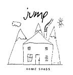

| Artist: | Jump |
| Title: | Home Songs |
| Label: | Cylcops CYCL |
| Length(s): | 49 minutes |
| Year(s) of release: | 2003 |
| Month of review: | [06/2003] |
| 1) | Home Song | 4.56 |
| 2) | All Hail | 4.37 |
| 3) | The Better Part Of Valour | 3.48 |
| 4) | Never Too Far | 4.37 |
| 5) | My Little Eye | 5.28 |
| 6) | Spin The Silver | 4.29 |
| 7) | Let Alone My Mother Down | 4.31 |
| 8) | The Witness | 4.34 |
| 9) | Fresh Young Thing | 5.42 |
| 10) | Different Story Now | 6.07 |
The Better Part Of Valour opens acoustically in mid-tempo, with mandolin later on. This gives the song a folky tinge. The electric guitar sets in a bit later accompanied by the organ. The vocals also become more active and aggressive in this part, the drums plod on. Never Too Far is a melancholic track with piano and strumming acoustic guitar. Again, I hear Fish in the music, the main difference lies in the vocals, which are less biting and more with a 'tear' in them. The catchy chorus is alternated with long Americana like guitar lines.
On My Little Eye, the acoustic guitars open again. This time it even leads to a Spanish guitar passage. The vocals are softspoken this time. The waltzy chorus I like less. Only at the end does the electric guitar enter the picture for a sharply played solo.
Spin The Silver continues the catchy melodic line of the previous songs, this time with varied drums and some spaceous guitar lines. As usual the song contains some melodic and pace variation in the middle when the music departs from the basic format. But we return to the chorus before the end.
Let Alone My Mother Down had a weird title until you hear what comes before in the lyrics. But it continues to be weird. Anyway, this is plodding rock track, not so melodic and the vocalist singing in a more muscular way. In addition we have some female backing vocals from Kate Townshend. On the whole not a good track. We roll on with the easy going The Witness. Time for some careful instrumental soloing here, the keyboards for instance.
With Fresh Young Thing we are nearing the end of the album. This time the music is a bit fuller again with the organ introduced again. Strummed mandolin (a bit reminiscent of an INXS tune) and a bouncy gate make for a more rocky tune. The chorus is a good one. A moody guitar part can be heard in the middle, followed by a recap of the chorus and some additional keyboards. The guitar solo afterwards is a quite sharp. The only time we cross the six minute mark is on Different Story Now. The guitar dominates here with plenty of fuzz and rhythm being played on 'em. Again good melodic vocal material here.
It is striking that such a lyric oriented band does not include them in the booklet, but maybe they realize they are understandable anyway.